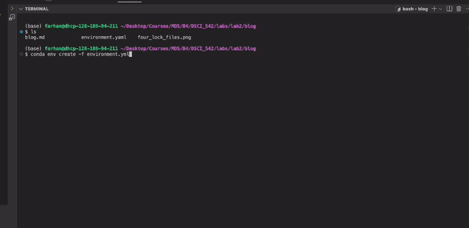

Introduction üåü
In data science, we frequently rely on many packages. With Python, we commonly use libraries such as pandas, numpy, scikit-learn, and many others. However, these libraries are often compatible only with specific versions of each other. This is where Conda environments come into play.
Why Use Conda Environments? ü§î
Conda environments allow us to list all the necessary packages for a project, along with their specific versions, in a single file. This way, when someone else wants to use our project, they can simply install all the required packages from this list, ensuring compatibility.
You might wonder: why do we need environments in the first place? Why can’t we just install the packages directly?
The answer is simple: you may have multiple projects, each requiring a different set of packages. One project might need Python 3.11, while another requires Python 3.9. By using environments, you can maintain separate sets of installed packages and activate the appropriate set depending on the project you are working on [2].
In the next section, I will show you how to set up an environment file and install a conda environment from an environment file.
Setting Up Conda Environments üõ†
Step 1: Installing Miniconda [1] To get started, you need to install Miniconda, a lightweight version of Anaconda that provides just the essentials for managing Conda environments.
Follow the detailed instructions provided here for installing Miniconda.
For a quick installation on macOS (ARM64), open your terminal and run the following commands:
mkdir -p ~/miniconda3
curl https://repo.anaconda.com/miniconda/Miniconda3-latest-MacOSX-arm64.sh -o ~/miniconda3/miniconda.sh
bash ~/miniconda3/miniconda.sh -b -u -p ~/miniconda3
rm ~/miniconda3/miniconda.sh
source ~/miniconda3/bin/activate
conda init --allStep 2: Creating the environment file üìù
In your project folder, create a file named environment.yaml.
Open the file and paste the following:
name: tutorial
channels:
- conda-forge
- defaults
dependencies:
- numpy=1.26.0
- pandas=2.2.3
- pip=24.3.1
- python=3.11
- scikit-learn=1.5.2
- scipy=1.14.1
- quarto=1.5.57Step 3: Creating the environemnt from environment.yaml
While in the directory where the environemnt.yaml is locatied, run:
conda env create -f environment.yamlYou can then activate the conda environment using:
conda activate tutorialGoing One Step Further: Using Conda Lock Files üöÄ
When you install an environment from an environment file, you might notice that additional packages, which were not explicitly listed, are also installed. For example, when we create the environment from our previous environment file, we see packages like xx installed:

Why does this happen? This occurs because in the environment file, we only specify high-level packages.
But when installing a Conda environment across different operating systems, Conda may install different versions of these low-level packages. Consequently, even though the high-level packages remain the same, the overall environment may differ across platforms. Additionally, since we haven’t specified exact versions for the low-level dependencies, installing the environment can take longer as Conda needs to resolve compatible versions on its own [3].
The Solution? Conda Lock Files üõ°Ô∏è
Conda lock files are platform-specific files that list the exact versions of all dependency packages, including low-level ones, for a given environment. By using these lock files, you can ensure that the environment is identical across different platforms.
In the next section, I will demonstrate how to generate and use Conda lock files to create consistent environments across various operating systems.
Generating and Using Conda Lock Files üõ†
Let’s assume we are working with the following environment file (environment.yaml):
name: tutorial
channels:
- conda-forge
- defaults
dependencies:
- numpy=1.26.0
- pandas=2.2.3
- pip=24.3.1
- python=3.11
- scikit-learn=1.5.2
- scipy=1.14.1
- quarto=1.5.57To generate a lock file for different platforms, run the appropriate command below:
For macOS (ARM-based, e.g., Apple Silicon):
conda-lock -k explicit -p osx_arm64 -f environment.yamlFor macOS (intel):
conda-lock -k explicit -p osx-64 -f environment.yamlFor Linux:
conda-lock -k explicit -p linux-64 -f environment.yamlFor Windows:
conda-lock -k explicit -p win-64 -f environment.yamlAssuming you are on macOS ARM, you can create an environment from the lock file by running:
conda-lock install --name tutorial conda-osx-arm64.lockYou should generate all four conda lock files to ensure your collaborators have the necessary files for their respective platforms. Running the four commands will produce the following files:

Note:
- The –name flag specifies the environment name (tutorial in this case). - The lock file ensures the exact versions of dependencies are installed, making the environment fully reproducible across different platforms.
For Real Pros: Going Even Further üèÖ
Remember when I mentioned that using conda-lock allows us to recreate exact environment copies, including exact versions for subdependencies? I wasn’t entirely correct.
While conda-lock does pin exact versions of subdependencies, there are certain system or OS-level dependencies that it doesn’t account for. These dependencies can vary depending on the operating system where the environment is created—whether it’s Linux, Windows, or macOS.
This is where Docker comes in. Docker allows us to package an environment along with the OS kernel, such as Linux. Whenever someone runs our Docker container, they’ll be running the project in a Linux environment with the exact same dependencies. By using Docker, we ensure that the project environment is exactly the same for all collaborators, including system-level dependencies.
In the next stage, I’ll guide you through the steps of setting up a Docker container with a copy of your environment from a Linux perspective.
Docker Steps üê≥
Step 1: Create an account on DockerHub [4]
You need a DockerHub account to manage and store your Docker images. Sign up if you don’t already have an account.
Step 2: Download and Install Docker [5]
Step 3: Create the Dockerfile
Assuming you have the conda-lock file in your working project directory, create a file called Dockerfile in your project directory.
FROM quay.io/jupyter/minimal-notebook:afe30f0c9ad8
COPY conda-linux-64.lock /tmp/conda-linux-64.lock
USER root
# install lmodern for Quarto PDF rendering
RUN sudo apt update \
&& sudo apt install -y lmodern
USER $NB_UID
RUN mamba update --quiet --file /tmp/conda-linux-64.lock \
&& mamba clean --all -y -f \
&& fix-permissions "${CONDA_DIR}" \
&& fix-permissions "/home/${NB_USER}"
RUN pip install -r /tmp/requirements.txtBriefly,
- The FROM command tells us we are building off an existing environment (Linux, in this case) [6].
- The COPY command is used to transfer your Conda lock file into the Docker container.
- The RUN command installs all the dependencies in the Docker container.
Step 4: Build the Docker Image
docker build -t username/imagename:tag .- The username should be your DockerHub username.
- The image name is up to you and can be chosen based on your project or preference.
- The tag is also your choice and is typically used to version your image (e.g., latest, v1.0, etc.).
Step 5: Push image to Docker Hub
docker push username/imagename:tagUsing the Docker Image ⚙️
Step 1: Create the Docker Compose file in your project directory and name it docker-compose.yaml.
services:
pull-image:
image: username/imagename:tag
ports:
- "8888:8888"
volumes:
- "${PWD}:/app/data"
working_dir: /app/data
deploy:
resources:
limits:
memory: 10G
platform: linux/amd64Step 2: Install docker-compose [7]
sudo curl -L "https://github.com/docker/compose/releases/latest/download/docker-compose-$(uname -s)-$(uname -m)" -o /usr/local/bin/docker-composeVerify installation using:
docker-compose --versionStep 3: Pull and Run the Docker Image
In your project directory, run:
docker-compose upFollow the instructions on your terminal. That should lead you to a jupyter notebook where you can work on this project inside the docker container.
Step 4: Cleanup After finishing your work, close the Docker container:
docker-compose downConclusion üèÅ
With this knowledge, you are now ready to collaborate effortlessly with others and ensure that your projects run smoothly on any system. Happy coding!
References
Anaconda, Inc. Installing Miniconda. 2025.
https://docs.anaconda.com/miniconda/install/#quick-command-line-install (Accessed January 15, 2025).Conda Documentation. Managing Environments with Conda. 2025.
https://docs.conda.io/projects/conda/en/latest/user-guide/tasks/manage-environments.html (Accessed January 15, 2025).Conda Incubator. Conda Lock Documentation. 2025.
https://conda-incubator.github.io/conda-lock/ (Accessed January 15, 2025).Docker Inc. DockerHub. 2025.
https://hub.docker.com (Accessed January 15, 2025).Docker Inc. Get Started with Docker. 2025.
https://www.docker.com/get-started/ (Accessed January 15, 2025).Quay.io. Minimal Jupyter Notebook Docker Image. 2025.
https://quay.io/repository/jupyter/minimal-notebook (Accessed January 15, 2025).Docker Inc. Docker-Compose Installation Guide. 2025.
https://github.com/docker/compose/releases (Accessed January 15, 2025).